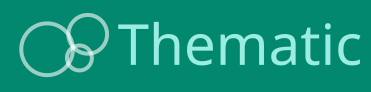
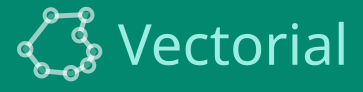
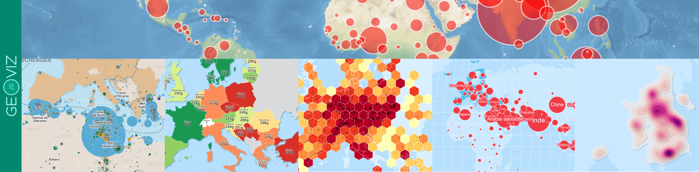

Geoviz JavaScript library
Tags #cartography #maps #geoviz #dataviz #JSspatial #Observable #FrontEndCartography
geoviz is a JavaScript library for designing thematic maps. The library provides a set of d3 compatible functions that you can mix with the usual d3 syntax. The library is designed to be intuitive and concise. It allow to manage different geographic layers (points, lines, polygons) and marks (circles, labels, scale bar, title, north arrow, etc.) to design pretty maps. Its use is particularly well suited to Observable notebooks. Maps deigned with geoviz are:


🌏 live demo Observable notebook
💻 Source code github
💡 Suggestions/bugs issues

Installation
In the browser (CDN, global variable)
<script src="https://cdn.jsdelivr.net/npm/geoviz" charset="utf-8"></script>
In the browser (ES modules)
<script type="module">
import * as geoviz from "https://cdn.jsdelivr.net/npm/geoviz/+esm";
</script>
With a bundler (Vite, Webpack, etc.)
npm install geoviz
In Observable notebooks
geoviz = require("geoviz")
Examples
To see what can be done with the geoviz library, many examples have been developed on the Observable platform. Click on the image below to access them.
Syntax
There are several steps involved in creating a map with geoviz.
1 - First, create the map container using the create() function. This is where you define the projection, margins, background color, etc. In short, all the general parameters of the map.
2 The next step is to progressively add layers. A set of dedicated functions is available for this purpose. For instance, path adds a spatial dataframe, graticule draws latitude and longitude lines, header inserts a title, and footer adds a source note.
3 - Then, the render() function displays the map
For example:
let svg = geoviz.create({projection: "Bertin1953", zoomable: true})
svg.outline()
svg.graticule()
svg.path({data: **a geoJSON**})
svg.header({text : "Hello geoviz"})
svg.render()
Here's an example that works in vanilla JS. Copy this code into an .html file and open it in your web browser.
<script type="module">
import * as geoviz from "https://cdn.jsdelivr.net/npm/geoviz/+esm";
let geojson =
"https://raw.githubusercontent.com/riatelab/geoviz/refs/heads/main/examples/world.json";
fetch(geojson)
.then((res) => res.json())
.then((data) => {
let svg = geoviz.create({ projection: "Bertin1953", zoomable: true });
svg.outline();
svg.graticule();
svg.path({ data: data });
svg.header({ text: "Hello geoviz" });
document.body.appendChild(svg.render());
});
</script>
There are several ways to build maps with geoviz. Multiple syntaxes are possible.
Classic style
let svg = geoviz.create({projection: "Polar"})
geoviz.outline(svg, {fill: "#5abbe8"})
geoviz.graticule(svg, {stroke: "white", step: 30})
geoviz.path(svg, {data: **a geoJSON**, fill: "#38896F"})
geoviz.render(svg)
Light style
let svg = geoviz.create({projection: "Polar"})
svg.outline({fill: "#5abbe8"})
svg.graticule({stroke: "white", step: 30})
svg.path({data: **a geoJSON**, fill: "#38896F"})
svg.render()
With the plot() function
let svg = geoviz.create({projection: "Polar"})
svg.plot({type: "outline", fill: "#5abbe8"})
svg.plot({type: "graticule", stroke: "white", step: 30})
svg.plot({type:"path", data: **a geoJSON**, fill: "#38896F"})
svg.render()
With the draw() function
geoviz.draw({
params: { projection: "Polar" },
layers: [
{ type: "outline", fill: "#5abbe8" },
{ type: "graticule", stroke: "white", step: 30 },
{ type: "path", data: **a geoJSON**, fill: "#38896F" }
]
});
Use whichever one you prefer.
Create & render
**These functions are essential for initializing a map, visualizing its content, and exporting it. They form the core workflow for creating maps with the geoviz library.**dd
- Create a geoviz map container :
create() - Render the map :
render() - Returns the map as a png file:
exportPNG() - Returns the map as a sav file:
exportSVG()
Base Map and Structure
Functions that define the map’s geographic content, including outlines, tiles, and graticules.
- Add a geoJSON:
path() - Earth outline in the projection:
outline() - graticule (latitude and longitude lines):
graticule() - rhumb lines (loxodromes)
rhumbs() - Tissot indicatrices:
tissot() - Natural Earth:
earth() - Mercator tiles:
tile()
Map Decorations and Annotations
Functions for styling and annotating the map, such as titles, scale bars, and north arrows.
- Map title:
header() - Source of the map:
footer() - North arrow:
north() - Scale bar:
scalebar() - Texts and labels:
text() - Location map:
minimap() - Empty layer with id:
empty() - Pattern layer:
pattern() - Sketch layer:
sketch()
Thematic
These functions allow the creation of thematic maps based on statistical data, complete with their associated legends.
- Proportional symbols layer:
prop() - Choropleth layer:
choro() - Typology layer:
typo() - Proportional + choropleth combined layer:
propchoro() - Proportional + typology combined layer:
proptypo()Pictogram layer:picto()
Thematic (advanced)
These functions allow the creation of advanced thematic maps based on statistical data, complete with their associated legends.
- Grid-based proportional symbols layer:
gridprop() - Grid-based choropleth layer:
gridchoro() - Smoothed density (isobands) layer:
smooth() - Dot density layer:
dotdensity()
Marks
Behind the symbolization functions, there are elementary graphical marks. In geoviz, it is possible to use them directly.
- Circle layer:
circle() - Square layer:
square() - Spike layer:
spike() - Half-circle layer: halfcircle()`**
- Symbol layer:
symbol()
Effects
Since the maps created are in SVG format, it is possible to apply filters to them. These functions offer four different options for doing so.
- Shadow effect:
effect.shadow() - Blur effect:
effect.blur() - ClipPath layer:
effect.clipPath() - Radial gradient:
effect.radialGradient()
Legends
Functions to design map legends.
- Add a box legend:
legend.box() - Add a vertical typology legend:
legend.typo_vertical() - Add a horizontal typology legend:
legend.typo_horizontal() - Add a horizontal choropleth legend:
legend.choro_horizontal() - Add a vertical choropleth legend:
legend.choro_vertical() - Add a vertical gradient legend:
legend.gradient_vertical() - Add a spike legend:
legend.spikes() - Add a proportional circles legend:
legend.circles() - Add a nested proportional circles legend:
legend.circles_nested() - Add a proportional squares legend:
legend.squares() - Add a proportional nested squares legend:
legend.squares_nested() - Add a proportional half-circles (mushrooms) legend:
legend.mushrooms() - Add a vertical symbol legend:
legend.symbol_vertical() - Add a symbol horizontal legend:
legend.symbol_horizontal()
Tools
Geoviz also provides many functions that allow you to manipulate data.
- The
tool.random()function returns a random color among 20 predefined colors. - The
tool.addonts()function allows add font to the document from an url. - The
tool.radius()function return a function to calculate radius of circles from data tool.merge()is a function to join a geoJSON and a data file. It returns a GeoJSON FeatureCollection.- The
tool.unproject()function allow to unproject geometries. It returns a GeoJSON FeatureCollection with wgs84 coordinates tool.featurecollection()is a function to create a valid GeoJSON FeatureCollection, from geometries, features or coordinates. It returns a GeoJSON FeatureCollection.- The
tool.centroid()function calculate the centroid of all the geometries given in a GeoJSON FeatureCollection. It returns a GeoJSON FeatureCollection (points) - The
tool.dissolve()function aims to transform multi part features into single parts feature. It a GeoJSON FeatureCollection (without multi part features) - The
tool.ridge()function convert a regular grid (x,y,z) to a GeoJSON FeatureCollection (LineString). The aim is to draw a rideline map. - The
tool.choro()function discretizes an array of numbers. It returns an object containing breaks, colors, the color of the missing value and a function. - The
tool.typo()function allows you to assign colors to qualitative data. It can be used to create typology maps. It returs an object containing types, colors, the color of the missing value and a function. - The
tool.grid()function creates a regular grid as a GeoJSON object. For all grid types (except "h3"), the function returns a GeoJSON with SVG coordinates in page layout. For type "h3", it returns geographic coordinates (latitude and longitude). - The
tool.dodge()function use d3.forceSimulation to spread dots or circles of given in a GeoJSON FeatureCollection (points). It returns the coordinates in the page map. It can be used to create a dorling cartogram. The function returns a GeoJSON FeatureCollection (points) with coordinates in the page map. tool.dotstogrid()is a function to create a regular grid in the SVG plan count the number of dots insidetool.geotable()is a function to create an array on objects containing properties and geomeytries, froam a GeoJSON FeatureCollection. This makes it easy to sort, extract data, etc. tool.featurecollection(geotable, { geometry: "geometry" }) can be used to rebuild a valid geoJSON. The function returns an array of an array of FeatureCollections.- The
tool.height()function return a function to calculate radius of circles from data. It returns an object containing a radius function. tool.proj4d3()is a function developped by Philippe Rivière to allow tu use proj4js projections with d3. It returns a d3js projection function.- The function
tool.project()use geoproject from d3-geo-projection to project a geoJSON. It returns a GeoJSON FeatureCollection with coordinates in the page map. - The function
tool.randompoints()renerates random points inside polygons or multipolygons using a dot-density approach. Each point is returned as a valid GeoJSON Feature with properties containing { geom_id, data, var, id }. - The function
tool.replicate()can be used to create "dots cartograms". The function returns a GeoJSON FeatureCollection with overlapping features
See also: https://riatelab.github.io/geotoolbox & https://neocarto.github.io/geogrid
Geoviz is also available in R language. See: https://riatelab.github.io/geoviz_R